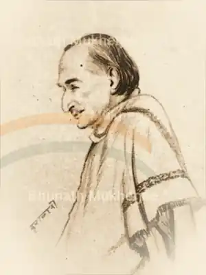

J. B. Kripalani
Kripalani is one of the Assembly's most visible procedural voices in its opening days. He helps initiate the first sitting, moves the method for choosing the permanent President and places the Rules Committee before the House.
Opening proceedingsElection procedureRules CommitteeInstitution-buildingHindi/Hindustani
Indexed interventions
Invites Sinha to the temporary Chair
Kripalani opens the Assembly's working proceedings by inviting Dr. Sachchidananda Sinha to take the Chair.
Moves procedure for electing the permanent Chairman
The Assembly needs a legitimate, agreed process before it can choose its permanent presiding officer.
Moves the Rules Committee resolution
Kripalani argues for a committee to frame rules governing the Assembly and its internal bodies.
Nominates Rajendra Prasad
One valid nomination for Rajendra Prasad lists Kripalani as proposer and Vallabhbhai Patel as seconder.
Read in context
Primary source: Parliament Digital Library / Lok Sabha Secretariat. Profile synthesis is editorial.
Website by Radhakishan Jat